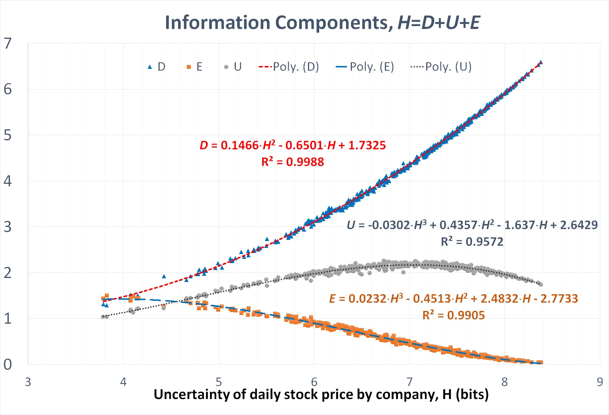
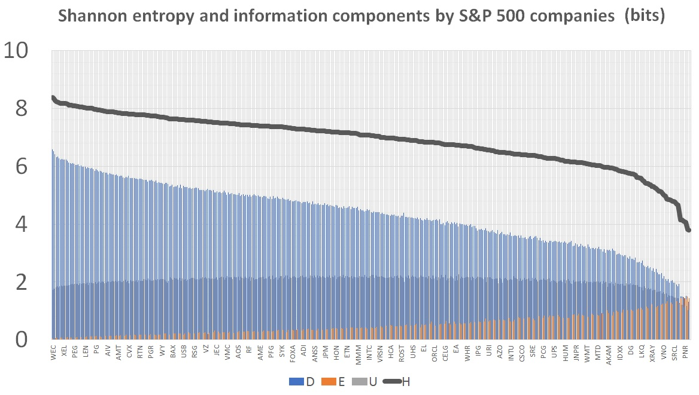

Predictability of market states
In the famous book "The intelligent investor",
Benjamin Graham had advised not to waste time
at forecasting how the market will perform in the future,
as markets are fickle and market prices are largely meaningless.
Instead, he taught that the intelligent investor should
focus at the diligent financial evaluation of company's
market value, buying stocks that are clearly underpriced in the market.
These opportunities are hard to find, but worth waiting for.
Nowadays, we have enough publicly available historical
data on stock market prices and the adequate mathematical methods in our
hands to confirm or deny the conclusions
of the father of value investing
and security analysis.
We study predictability of market states and stock prices of individual companies by reconstructing a discrete model of S&P 500 phase space, in which every component of S&P 500 is characterized by the daily return and roughness of the stock, and the market state corresponds to a certain distribution of stock in phase space. Such approahc helps us answer an important question: Can we (using a plethora of methods) predict market states, if so, to which capacity?
Instead of studying the financial time series directly, we take them to the phase space. We introduce Return vs Roughness space. For example, the original AMZN time series is shown below.
\(R(t) = Return = \frac{P(t)-P(t-1)}{P(t-1)}, \;\; R'(t) = Roughness = R(t)-R(t-1) \)
where \(P(t-1), P(t)\) are the prices of the stock at the time \(t-1\) and \(t\), respectively.
The time series in the phase space is shown below. Each point in the phase space represent a particular state of the AMZN stock. Similarly, we extend such transition to the reamining time series from S&P 500.
Data on the individual stock prices of S&P 500 constituents for five years from 08/12/2013 to 08/09/2018 (i.e., 1,259 trading days in total) were acquired using The Investor’s Exchange API, the Python script is available here. We have chosen the largest data set publicly available for free and verifiable from different data sources. The data set contains price of the stock at market open, highest price reached in the day, lowest price in the day, price of the stock at market close, number of shares traded labeled by their ticker names for the most of S&P 500 companies during the studied period. We have used individual stock prices at market close since this information was always present in the data set. Moreover, in order to preserve consistency of our data, only 468 companies were considered; those selected were present in S&P 500 index throughout the entire observation period, and comprise 98.78% of S&P 500 total market weight. The other 37 constituents were excluded from the study because their presence in the index was inconsistent, and their stock prices were corrupted.
For the sake of computational feasibility, the 5-year range of return values (minimum −0.53404886 and maximum of 0.3433584) as well as 5-year range of roughness values (minimum −0.59823906 and maximum 0.7059597) were divided into 50 intervals of equal lengths (of 0.01754815 and 0.0260839, respectively). The discrete model of market phase space was reconstructed as the ordered set of 2500 distinct cells. Our approach to reconstructing market phase space is substantially different from the previous works, in which a phase space was discussed as a metaphor of either all possible market events ”where the transfer of rights to real estate takes place and decision-making processes occur”, or a collection of recurrence plots containing the information on the systemic trajectory repetition in exchange market times series. A few phase portraits are demonstrated below. Depending on a state of the market, one can observe the phase portraits that do not look alike.
The state of the US economy can be visualized by daily snapshots of the S&P 500 stocks in phase space as displayed in the figure above. Standard & Poor’s calculates the market capitalization weights (currently ranging from 0.00753 for the National Weather Service to 3.963351 for the Apple company) using the number of shares available for public trading. Movements in the prices of stocks with higher market capitalization (the share price times the number of shares outstanding) had a greater impact on the value of the index than do companies with smaller market caps. We indicate the capitalization weights of companies by the radii of circles and jet-colors for convenience of the reader.
Market crashes reveal themselves as a dramatic decline of stock prices across the market when the most of stocks appear in the ’red zone’ of phase space characterized by the negative return and often negative roughness values, resulting in a significant loss of paper wealth. During the periods of sustained increases in the prices of stocks (i.e., market rallies), the stocks overwhelmingly move to the ’green zone’ of phase space, with positive returns and often positive roughness.
Market tumbling on shocking events constitutes a 2-day synchronization phenomenon. On the first day, many stocks across the market get synchronized on the zero–return value that becomes visible as a vertical line emerging on the phase space snapshots. On the second day, the stock market would become essentially volatile, plunging and snapping back due to coherent sells-off / ramping of stocks that might be affected by the announced news.
Indeed, the stock drops may result in the rise of stock prices for corporations competing against the affected corporations. Interestingly, a certain degree of coherence in the apparently volatile market movements might persist for a day as it seen from the continued alignment of stocks in phase space visible on the second day of the market recovery process.
The first tumbling event had occurred on Thursday, 07/18/2014, when a Malaysia Airlines plane (flight MH17) headed from Amsterdam to Kuala Lumpur carrying 298 passengers had been shot down by a Russian military unit invading eastern Ukraine. The second tumbling is observed on August 4, 2014 at the coincidence of alarming events, including Argentina’s default on bond payments, more sanctions against Russia backed by EU and US in response to the downing of flight MH17, and the Islamic State seizure of fifth Iraqi oil field. Within that week, the S&P 500 lost 2.69%, the Dow fell 2.75%, and the Nasdaq slid 2.18%.
Once in the phase space, we can calculate probabilities for each of the observed states and further, at this point we can introduce the information content of an event X. The amount of uncertainty associated to an event is related to the probability distribution of the event. Once the event X has been observed, some amount of uncertainty is removed, and the relevant amount of information is released. A highly uncertain event X, occurring with small probability \(P (X) \ll 1\), contains more information than frequent events.
The information content of the event X occurring with probability P (X) is $$ J(X) = -log_2 P(X) $$ measured in bits. For instance, the information content of tossing a fair coin where the probabilities of heads and tails are p = 0.5 equals \(− log_2 0.5 = 1\) bit.
Not all cells in market phase space are visited equally often by stock prices. The central region, about the zero-return zero-roughness equilibrium point was the most visited of all during five years of observations. This observation is in line with the Mean reversion theory suggesting that asset prices and returns eventually return back to the long-run mean or average of the entire data set. Consequently, the information content is minimal for the frequently visited cells located in the central region, but is high for the periphery cells rarely visited by stocks . The phase space cells corresponding to market crushes are characterized by the maximum information content. Uneven attendance of cells in S&P 500 phase space results in the inequitable degree of predictability of the corresponding events.
Mutual information measuring the dependence between two random variables had been introduced by Cover and Thomas as a measure of predictability of stochastic states in time, $$I(t) = \displaystyle \sum_{\{X, Y\}} P(X \xrightarrow{t} Y) \log_2 \frac{P(X \xrightarrow{t} Y)}{P(X)P(Y)}$$ where \( P(X \xrightarrow{t} Y)\) is the empirical probability found by dividing the number of times the transition between the X and Y cells occurred precisely in t days by the total number of observed transitions from X, P (X) and P (Y ) are the marginal probabilities (of observing the stock in X and Y , independently of each other), and summation is performed over all possible pairs of cells X and Y . If the transition \( P(X \xrightarrow{t} Y)\) is statistically independent of the cells X and Y , the amount of mutual information associated with such a pair of cells is zero. Mutual information decreases monotonically with time for a stationary Markov process.
The predictability of states calculated as the KL–divergence between the density of t- days precursors for an event and the marginal density of states P (X) across phase space changes with time. Summarizing on short-range predictions based on observation of all possible 1–day precursors for every cell in phase space, we obtain that the most predictable states are aligned along the ’main diagonal ’ (R ∝ R') of the phase portrait in S&P 500 phase space, roughly corresponding to the exponential growth (decay) processes with a single unstable equilibrium at the zero-return zero-roughness point (0, 0). The states out of the ’main diagonal’ cannot be predicted efficiently.
Long-range forecasts predicting the behavior of stocks for more than 3 days in advance follow the different predictability pattern. The
efficiently predictable states for long-range forecasts are located overwhelmingly in the central region of the phase portrait, about the zero-return zero-roughness unstable equilibrium point. In figure, we have presented the predictability pattern based on 24-day precursors. This observation also supports the general wisdom of the Mean reversion theory.
Long-range predictions of infrequent
events (such as market crushes) situated on the periphery of the phase diagram should be seen as a rough guide, as the accuracy of such predictions falls considerably around the few days mark.
It is worth mentioning that the time decay of mutual information in time calculated over S&P 500 phase space is very heterogeneous and even non-monotonous. The value of mutual information plunges within the first three days to approximately 7 Kbits and then gets stuck there, at least up to 100-day’s mark. The observed non-monotonous decay of mutual information may indicate the presence of the long-lasting large fluctuations of information flow that might be attributed to stock market bubbles resulted from groupthink and herd behavior.
An intelligent investor is interested in diversification of the portfolio across stocks to reduce the amount of unsystematic risk of each security. Unsystematic risk (related to the occurrence of desirable events) might be associated to the high shares of unpredictable (ephemeral) information in daily stock prices. To quantify the risk levels in market phase space, we have investigated the shares of predictable and unpredictable information in the transitions of stocks between the cells in phase space for all 468 studied companies from the S&P 500).
We have analyzed the empirical 1-day transition matrices for the stocks of individual companies from the S&P 500 list observed in the last five years. Every transition matrix gives us three values (D, U, E) quantifying the predictable and unpredictable information components in uncertainty of a stock state with respect to one-day transitions. While working with the S&P 500 data, we have parameterized the (D, U, E) – triplets by uncertainty of daily stock price assessed by its Shannon entropy H.
The functional analogy between the state repetition probability 0 ≤ p ≤ 1 for tossing an unfair coin and uncertainty of daily stock price of a company can be intuitively understood in terms of stock “mobility” in phase space. The abundance of trajectory patterns pertinent to highly mobile stocks provide more valuable information for the efficient prediction of the future states. On the contrary, from the forecasting perspective, the behavior of low mobile stocks is prone to high unsystematic risk of unpredictable events like tossing a fair coin.
The empirically observed relations demonstrate that the amount of predictable information in daily transition of stocks (D + U) grows while the amount of unpredictable information (E) decays monotonously with Shannon’s entropy H measuring uncertainty of the daily stock price for every studied company.
Unpredictable information associated to unsystematic risk is maximum (exceeding the both predictable information components) for the companies characterized by the lowest entropy values. In contrast to it, the amount of unpredictable information practically vanishes for the companies characterized by the highest uncertainty of daily stock prices, which can be mostly resolved by observation the historic time series as indicated by the dominance of the information component D.
Although entropy is commonly associated with the amount of disorder, or chaos in a system, our conclusion does not appear as a paradox judged from the everyday perspective. Stocks have different ’mobility’ in phase space as quantified by inequitable uncertainty of daily return (Shannon’s entropy) H in market phase space. In statistics, entropy is related to the abundance of ’microscopic configurations’ (i.e, trajectories of stocks updated daily) that are consistent with the observed ’macroscopic quantities’ (i.e., the density of cells obtained over the whole period of observation)
.Highly mobile stocks increase the degree to which the probability of visiting a cell is spread out over different possible trajectories in market phase space, providing more data valuable for the efficient forecasting the future states; the more such trajectories are available to the stock with appreciable probability, the greater it’s entropy. On the contrary, stocks of low mobility characterized by the low levels of Shannon’s entropy do not accumulate enough data for an efficient predictions of the future states.
The shares of information components in complex systems are naturally related to each other. The amount of unpredictable information decreases when the amount of predictable information increases; information predictable from the present state of a system alone is minimum when the future state can be determined from observation of the historic data.
The abundance of patterns in symbolic time series provide more valuable information for the efficient prediction of the future states. On the contrary, from the forecasting perspective, the behavior of ’low mobile’ stocks prone to high unsystematic risk of undesirable events is somewhat similar to tossing a fair coin.
The novelty of our approach is twofold.
First, we have developed the novel concept of predictability of states in phase space. Our approach is based on the idea that with some probability a state might be a t-day precursor of another state in phase space. The introduced measure of t-day predictability of a state is a sum of all information components from its t-day precursors. From such a point of view, Markov chains are characterized by the maximum predictability, as any state of a Markov chain is a predictor for any other state of the chain for all t with probability 1. The total amount of predictable information for any state of the Markov chain equals the total information content of the chain.
Second, we have proposed the novel methodology for a quantitative assessment of the amounts of predictable and unpredictable information in any stochastic process whenever an empirical transition matrix between the states observed over a certain time horizon becomes available. The proposed technique is an extension of the famous Ulam's method for approximating invariant densities of dynamical systems.
The following conclusions can be drawn:
- Long-range forecasts based on observed stock price time series might be efficient only for the frequently observed events in the market ohase space
- Short-range forecasts (1-3 days ahead) of rear events (such as market crashes ) might be efficient if and only if the predicted states are resulted from the process of exponential decay (growth) in time.
- Stocks have different mobility in phase space. Mobility of stock is usually irrelevant to the market capitalization weight of the company. The time series for highly mobile stocks might contain more predictable information for the efficient forecasting of the future states in phase space than the time series corresponding to less mobile stocks.